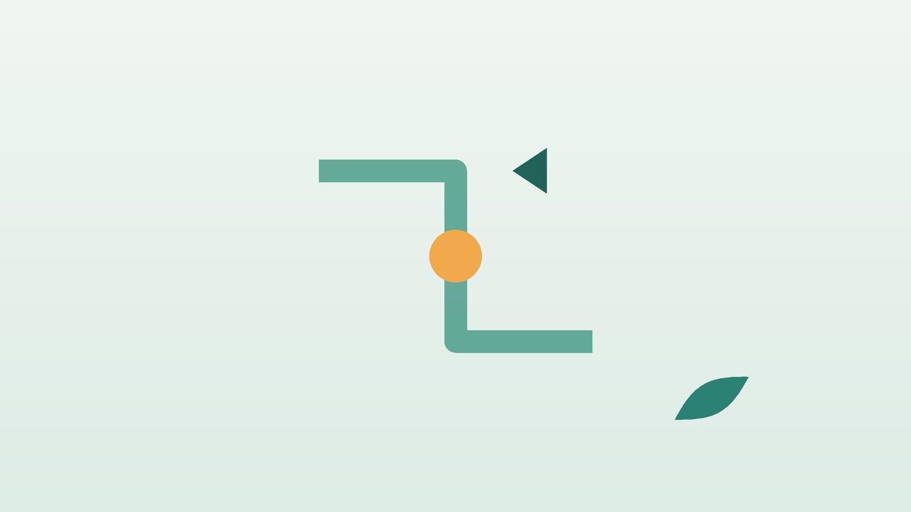

건강 칼럼 · 인천 급체 한의원
갑자기 명치가 꽉 막히고 손발이 차다면, 급체·체기 한방 치료

나의 체기, 이런 모습인가요?
- 급하게 먹거나 과식한 뒤 명치가 돌덩이처럼 꽉 막혔다
- 트림이 나올 듯 말 듯하고 메스껍다
- 손발이 차가워지고 얼굴이 창백해졌다
- 뒷머리나 관자놀이가 지끈거린다
- 배가 빵빵하게 부풀고 가스가 찬다
- 긴장하거나 화난 상태에서 먹으면 자주 이렇다
이 체크리스트는 진단 도구가 아니라 상담이 필요한지 가늠해 보는 참고용입니다.
'체했다'는 건 몸에서 어떤 일이 생긴 건가요?
음식이 들어오면 위는 위쪽을 넓혀 음식을 받아들이고, 규칙적으로 수축해 십이지장으로 내려보냅니다. 너무 빨리 많이 먹거나, 기름지고 찬 음식을 한꺼번에 먹거나, 스트레스로 자율신경이 긴장한 상태에서 식사하면 이 리듬이 잠시 흐트러져 음식이 오래 머물고 명치가 답답해집니다. 손발이 차고 식은 듯한 느낌, 두통이 함께 오는 것도 긴장한 자율신경의 반응으로 해석합니다.
대부분은 몇 시간에서 하루 사이에 가라앉지만, 비슷한 체기가 한 달에 여러 번 반복된다면 기능성 소화불량, 위염, 위궤양 같은 질환이 숨어 있을 수 있습니다. 질병관리청 국가건강정보포털도 체중 감소, 삼킴 곤란, 반복되는 구토가 동반된 소화불량은 내시경 같은 검사가 필요하다고 안내합니다.
체기가 아닐 수 있는 위험 신호
- 가슴 한가운데를 짓누르거나 조이는 통증이 왼팔·턱·등으로 뻗친다
- 식은땀, 숨참, 어지럼이 함께 온다 (심근경색 의심, 바로 119)
- 오른쪽 윗배가 몇 시간씩 아프고 열이 나거나 눈과 피부가 노래진다 (담석·담낭염)
- 명치 통증이 등으로 뚫고 나가듯 심하고 구토가 계속된다, 특히 과음 뒤 (췌장염)
- 검은 변이나 피를 토한다
- 배 전체가 딱딱해지고 손을 대기 어려울 만큼 아프다
특히 고혈압, 당뇨, 고지혈증, 흡연력이 있는 분이나 여성·고령자의 심근경색은 가슴 통증 대신 명치가 체한 듯한 불편함으로 시작하기도 합니다. 이럴 때 손을 따거나 소화제로 버티다 시간을 놓치는 일이 없어야 합니다.
한의학은 급체를 어떻게 보나요?
한의학에서는 먹은 음식이 소화되지 못하고 위에 머무는 것을 식체(食滯) 또는 식적(食積)이라 하고, 음식에 비위가 상한 상태를 식상(食傷)이라 불렀습니다. 『동의보감』은 내상(內傷) 편에서 음식으로 비위가 상한 증상과 그 처방을 자세히 다루었는데, 명치가 그득하고 트림에서 썩은 냄새가 나며 음식 냄새도 싫어지는 모습을 식상의 특징으로 들었습니다.
위의 기운은 아래로 내려가는 것이 정상인데, 음식이 막히면 기운이 위로 거슬러 메스꺼움과 트림이 생기고, 몸의 중심이 막히니 기혈이 팔다리 끝까지 가지 못해 손발이 차가워진다고 보았습니다. 예부터 '사관(四關)을 연다'고 하여 양손의 합곡과 양발의 태충을 함께 자극한 것도 막힌 중심의 기운을 팔다리로 풀어 주려는 뜻입니다.
나의 체기는 어떤 유형일까?
1. 식적(食積) 많이 먹어 걸린 유형
- 이런 분에게 많아요
- 과식, 늦은 밤 야식이 잦은 분
- 나타나는 모습
- 명치가 그득하고 신 트림, 음식 냄새가 싫다
- 함께 오는 몸의 신호
- 복부 팽만, 변이 시원찮음, 입 냄새
- 진찰에서 보이는 모습
- 혀 가운데 설태가 두텁게 끼고 맥이 미끄럽게 뜀
- 치료 방향
- 쌓인 음식을 삭이고 아래로 내리는 방향 (보화환 계열)
- 오늘부터 해 볼 것
- 한 끼는 미음이나 죽으로 가볍게 비워 주세요.
2. 간기범위(肝氣犯胃) 긴장하면 체하는 유형
- 이런 분에게 많아요
- 스트레스를 받으며 급히 먹는 분
- 나타나는 모습
- 화나거나 긴장한 뒤 명치와 옆구리가 조이고 트림이 잦다
- 함께 오는 몸의 신호
- 한숨, 두통, 목에 뭔가 걸린 느낌
- 진찰에서 보이는 모습
- 혀 가장자리가 붉고 맥이 팽팽함
- 치료 방향
- 뭉친 기운을 풀고 위를 편하게 하는 방향 (시호소간산 계열)
- 오늘부터 해 볼 것
- 식사 전 1분 동안 천천히 숨을 내쉬고 드세요.
3. 한습곤비(寒濕困脾) 찬 음식에 체하는 유형
- 이런 분에게 많아요
- 찬 음료, 날것, 밀가루를 즐기는 분
- 나타나는 모습
- 배가 차고 더부룩하며 묽은 변이 나온다
- 함께 오는 몸의 신호
- 몸이 무겁고 입맛 없음, 메스꺼움
- 진찰에서 보이는 모습
- 혀가 희고 설태가 축축함
- 치료 방향
- 속을 데우고 습을 말리는 방향 (향사평위산 계열)
- 오늘부터 해 볼 것
- 당분간 찬물 대신 미지근한 물을 드세요.
4. 비위허약(脾胃虛弱) 자주 반복되는 유형
- 이런 분에게 많아요
- 조금만 먹어도 쉽게 체하는 분
- 나타나는 모습
- 적게 먹어도 체기가 반복되고 오래간다
- 함께 오는 몸의 신호
- 피로, 식후 졸림, 무른 변
- 진찰에서 보이는 모습
- 혀 가장자리에 잇자국이 나고 맥에 힘이 없음
- 치료 방향
- 약한 비위를 북돋는 방향 (향사육군자탕 계열)
- 오늘부터 해 볼 것
- 끼니를 거르지 말고 조금씩 규칙적으로 드세요.
한의원에서는 어떻게 진찰하나요?
- 위험 신호 확인: 통증의 위치와 성질, 식은땀·숨참·발열 여부를 먼저 여쭈고, 심장이나 담낭 문제가 의심되면 바로 병원 진료를 안내합니다.
- 식사·스트레스 문진: 무엇을 어떻게 먹었는지, 체기가 얼마나 자주 반복되는지 확인합니다.
- 복진: 명치와 배꼽 주변의 긴장, 압통, 가스 찬 정도를 손으로 살핍니다.
- 설진·맥진: 혀와 설태, 맥으로 식적인지 긴장 때문인지, 비위가 약한지 가늠합니다.
침·약침·한약 치료는 어떻게 하나요?
1. 침 치료
- 합곡(合谷)·태충(太衝): 엄지와 검지 사이 손등, 엄지발가락과 둘째 발가락 사이 발등. 함께 사관이라 부르며 막힌 기운을 풉니다.
- 내관(內關): 손바닥 쪽 손목 주름에서 팔꿈치 방향으로 2치, 가운데 두 힘줄 틈. 메스꺼움을 가라앉힙니다.
- 중완(中脘): 명치 끝과 배꼽의 가운데. 위의 기운을 내립니다.
- 족삼리(足三里): 무릎 바깥쪽 아래 손가락 네 마디. 위장의 움직임을 돕습니다.
- 공손(公孫): 발 안쪽 엄지발가락 뼈 뒤 오목한 곳. 명치 답답함에 씁니다.
한의원의 침은 모두 멸균된 일회용 침입니다. 임신 중이라면 합곡처럼 임신 중 자극을 피하는 혈자리는 쓰지 않으니 진료 때 꼭 알려 주세요.
2. 약침
체기가 자주 반복되고 명치와 등이 함께 굳어 있는 분은 중완 주변과 등의 위장 관련 경혈에 약침을 적용해 뭉친 긴장을 풀어 줍니다. 배가 차고 더부룩한 분은 온열 요법을 함께 받으실 수 있습니다.
3. 한약
급한 체기에는 쌓인 음식을 삭이는 처방을 짧게 쓰고, 자주 반복되는 분은 비위의 힘을 돋우는 탕약으로 체질을 함께 다룹니다. 평소 드시는 약이 있다면 말씀해 주세요. 성분을 확인한 뒤 겹치지 않게 처방합니다.
원장님이 네이버 블로그에 진료 이야기와 건강 정보를 꾸준히 올리고 있습니다. 더 많은 이야기는 블로그에서 확인해 보세요.
블로그 보기치료는 어떤 순서로 진행되나요?
- 오늘 위험 신호를 먼저 확인하고, 침 치료로 막힌 명치와 메스꺼움을 풉니다.
- 1~3일 죽 같은 부드러운 식사로 위를 쉬게 하며, 필요하면 짧게 한약을 씁니다.
- 반복될 때 체기가 잦은 원인을 유형별로 보고 2~4주 동안 침과 탕약으로 관리합니다.
- 예방 식사 속도와 스트레스 습관을 함께 고쳐 재발 간격을 늘립니다.
한 번의 급체는 대개 짧게 끝나지만, 반복되는 체기는 위의 기능과 생활 습관을 함께 봐야 해 기간이 달라집니다.
체기를 줄이는 생활 관리
- 손 따기 대신 지압: 집에서 바늘이나 실로 손가락을 따는 것은 상처 감염 위험이 있어 권하지 않습니다. 대신 내관이나 합곡을 엄지로 3~5초씩 지그시 눌러 보세요.
- 한 끼 비우기: 체한 직후에는 억지로 먹지 말고 미지근한 물을 조금씩 마시며 위를 쉬게 합니다.
- 천천히 씹기: 한 숟가락에 20번 이상 씹고, 식사 시간을 15분 이상으로 늘립니다.
- 식후 가벼운 걷기: 바로 눕지 말고 10분 정도 천천히 걷습니다.
- 화난 채로 먹지 않기: 긴장이 클 때는 식사를 조금 미루거나 양을 줄입니다.
다른 진료가 함께 필요한 경우
- 체한 듯한 가슴 답답함에 식은땀과 숨참이 있으면 즉시 119에 연락하세요.
- 같은 체기가 한 달에 여러 번 반복되거나 체중이 빠지면 내시경 검사를 받아 보세요.
- 오른쪽 윗배 통증이 기름진 음식 뒤 반복되면 복부 초음파로 담석을 확인하세요.
- 40세 이상이라면 국가건강검진의 위암 검진을 거르지 마세요.
자주 묻는 질문 Q&A
- Q1. 체했을 때 손 따면 정말 내려가나요?
- 따고 나서 시원해졌다는 분도 있지만 근거가 뚜렷하지 않고, 집에서 소독되지 않은 바늘을 쓰면 감염 위험이 있어 권하지 않습니다.
- Q2. 체한 지 사흘이 지났는데도 답답해요.
- 단순 체기는 대개 하루 이틀이면 가라앉습니다. 오래가면 위염이나 다른 원인을 확인하는 것이 좋습니다.
- Q3. 체하면 왜 머리가 아픈가요?
- 위가 막히며 자율신경이 긴장해 뒷머리와 관자놀이가 조이는 두통이 함께 오는 경우가 많습니다.
- Q4. 탄산음료를 마시면 내려가나요?
- 트림이 나와 잠시 편할 수 있지만 위를 더 부풀릴 수 있어 미지근한 물이 낫습니다.
- Q5. 소화제를 먹어도 되나요?
- 가벼운 체기에는 도움이 될 수 있습니다. 다만 위험 신호가 있으면 소화제로 버티지 마세요.
- Q6. 아이도 체하나요?
- 아이도 급히 먹거나 놀란 뒤 체할 수 있습니다. 아이에게는 피부에 붙이는 소아 스티커침과 지압으로 관리합니다.
- Q7. 자주 체하는 것도 치료가 되나요?
- 비위가 약하거나 긴장형인 경우가 많아 유형에 맞춰 침과 탕약으로 관리하면 체하는 횟수를 줄이는 데 도움이 됩니다.
- Q8. 체한 날 운동해도 되나요?
- 가벼운 걷기는 좋지만 숨이 찰 정도의 운동은 속이 편해진 뒤에 하세요.
함께 읽으면 좋은 칼럼
건강 칼럼 전체 보기 →


참고 자료
- 질병관리청 국가건강정보포털 — 원문
- American Heart Association. Warning Signs of a Heart Attack — 원문
- 허준, 『동의보감』 잡병편 내상(內傷)
※ 이 글은 일반적인 건강 정보이며, 개인의 상태에 따라 치료 방법과 결과는 다를 수 있습니다. 정확한 진단과 치료는 진료를 통해 결정됩니다. 침·약침 시술 후 드물게 멍, 통증 등이 생길 수 있습니다.